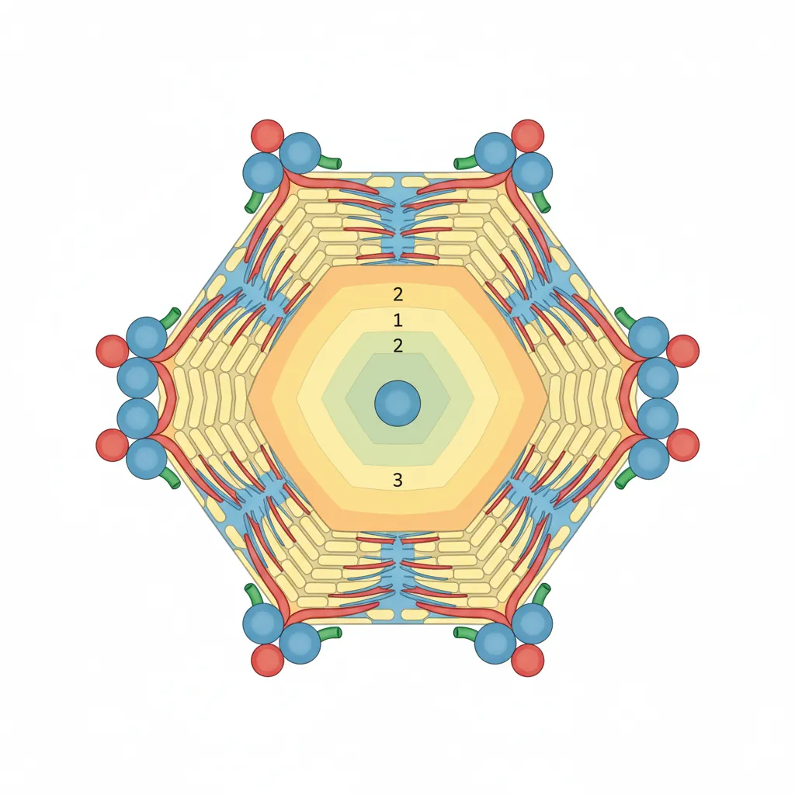
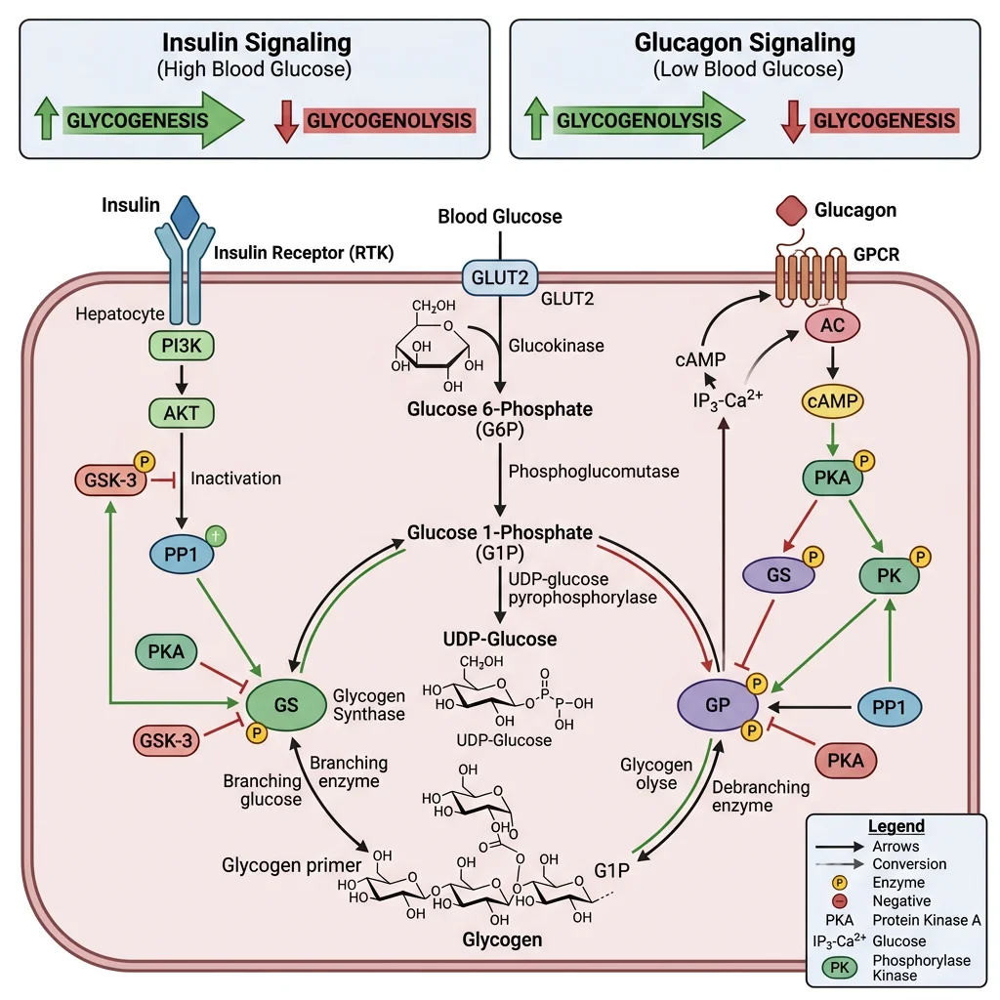
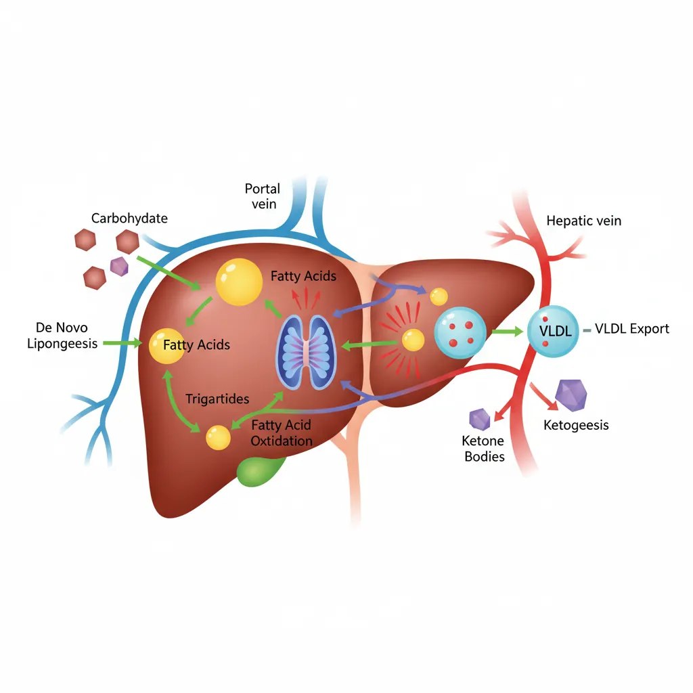
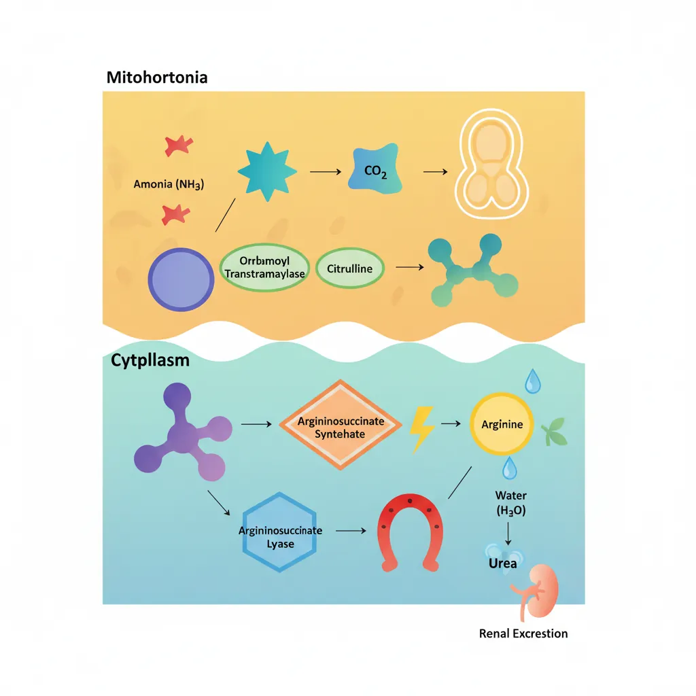
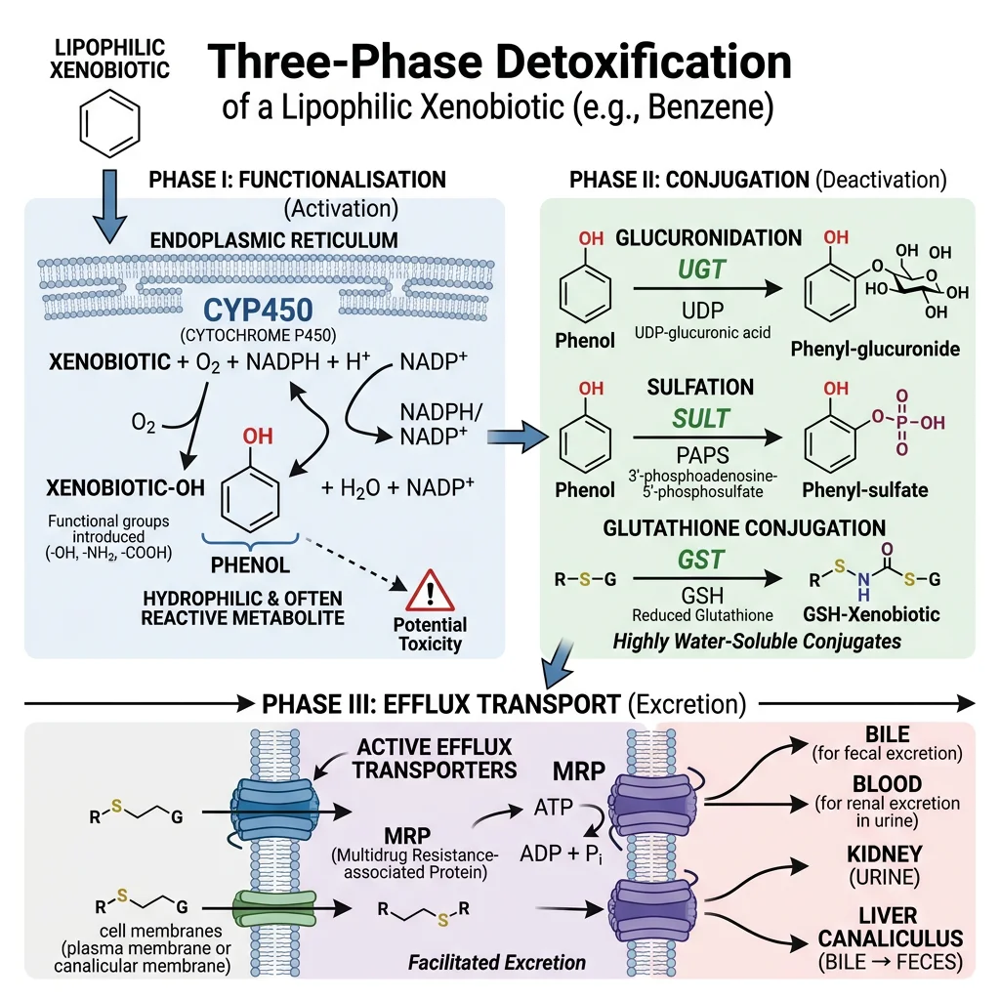
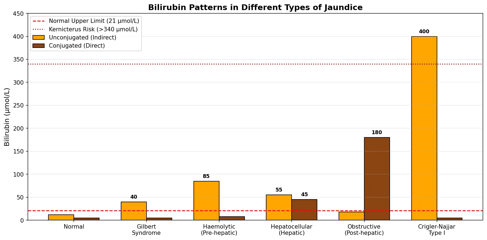

Biochemistry Mastery
Biological Chemistry Fundamentals
Atoms, bonds, functional groups, thermodynamicsWater, pH & Biological Buffers
Water polarity, pH, Henderson-Hasselbalch, blood buffersAmino Acids & Protein Structure
Amino acid classes, peptide bonds, protein foldingEnzymes & Catalysis
Kinetics, Michaelis-Menten, inhibition, regulationCarbohydrates & Lipids
Sugars, glycogen, fatty acids, cholesterol, membranesMetabolism & Bioenergetics
ATP, glycolysis, gluconeogenesis, redox carriersCitric Acid Cycle & Oxidative Phosphorylation
Acetyl-CoA, ETC, ATP synthase, oxygen dependenceSignal Transduction & Cell Communication
GPCRs, kinases, calcium, hormone cascadesNucleic Acids & Gene Expression
DNA, replication, transcription, translation, epigeneticsBrain & Nervous System Biochemistry
Neurotransmitters, ion gradients, myelin, neurodegenerationHeart & Muscle Biochemistry
Cardiac metabolism, actin-myosin, energy systemsLiver Biochemistry
Glucose homeostasis, detox, urea cycle, bileKidney Biochemistry & Acid-Base
pH regulation, ion transport, hormonal functionsEndocrine System Biochemistry
Hormone classes, signaling, glucose & stress controlDigestive System Biochemistry
Gastric acid, enzymes, bile, absorption, microbiomeImmune System Biochemistry
Antibodies, cytokines, complement, oxidative burstAdipose Tissue & Energy Balance
Triglycerides, lipolysis, leptin, obesityTissue-Specific Metabolism
Fed vs fasting, organ fuel selection, starvationMolecular Basis of Disease
Diabetes, cancer metabolism, neurodegenerationClinical Biochemistry & Diagnostics
Blood tests, liver/kidney markers, lipid panelsLiver Architecture & Zonation
The liver is the body's largest internal organ (~1.5 kg) and the metabolic command centre — receiving 25% of cardiac output despite representing only ~2% of body weight. Its unique dual blood supply (hepatic artery + portal vein) gives it first-pass access to nutrients absorbed from the gut and makes it the primary site for drug metabolism, toxin clearance, and metabolic integration.

The Hepatic Lobule
The functional unit of the liver is the hepatic lobule — a hexagonal structure organised around a central vein:
- Portal triads at each corner contain: (1) hepatic artery branch, (2) portal vein branch, (3) bile duct — blood flows inward from triads while bile flows outward
- Sinusoids: Fenestrated capillaries (50–100 nm pores) lined by endothelial cells — allow free exchange of macromolecules between blood and hepatocytes
- Kupffer cells: Resident macrophages in sinusoidal lumen — clear bacterial endotoxins (LPS) from portal blood; the liver removes ~99.9% of gut-derived bacteria
- Hepatic stellate cells (Ito cells): Store vitamin A in lipid droplets; when activated by injury → transform into myofibroblasts → produce collagen → fibrosis → cirrhosis
- Space of Disse: Gap between sinusoidal endothelium and hepatocytes — site of nutrient exchange and stellate cell residence
Metabolic Zonation — Location Determines Function
Hepatocytes are not identical — their metabolic programming depends on their position along the portal-to-central axis (Rappaport acinus):
- Zone 1 (periportal): Highest O₂ and nutrient concentration → specialises in oxidative metabolism: gluconeogenesis, β-oxidation, urea synthesis, cholesterol synthesis, bile acid production
- Zone 2 (mid-lobular): Intermediate phenotype — transitional metabolism
- Zone 3 (pericentral/centrilobular): Lowest O₂ → specialises in glycolysis, lipogenesis, ketogenesis, glutamine synthesis, xenobiotic metabolism (CYP450) — most vulnerable to ischemic injury and acetaminophen toxicity
This zonation is maintained by Wnt/β-catenin signalling (high in Zone 3) versus Hedgehog/Hippo pathways (high in Zone 1) — a beautiful example of how morphogen gradients create metabolic specialisation.
| Liver Cell Type | % of Liver Cells | Primary Function |
|---|---|---|
| Hepatocytes | 60–70% (80% of liver mass) | All major metabolic functions: gluconeogenesis, urea cycle, bile production, detoxification |
| Kupffer cells | 10–15% | Phagocytosis of bacteria, old RBCs; cytokine production; 80% of body's fixed macrophages |
| Sinusoidal endothelial | 15–20% | Fenestrated barrier; scavenger receptor-mediated endocytosis; regulates sinusoidal tone |
| Stellate cells (Ito) | 5–8% | Vitamin A storage (90% of body reserves); collagen production when activated → fibrosis |
| Cholangiocytes | 3–5% | Line bile ducts; modify bile composition via secretion and absorption |
Glucose Homeostasis
The liver is the body's glucostat — maintaining blood glucose within the narrow range of 4–6 mmol/L (70–110 mg/dL) regardless of feeding state. This is critical because the brain consumes ~120 g glucose/day and cannot tolerate hypoglycaemia. The liver achieves this through two reciprocally regulated pathways: glycogen metabolism and gluconeogenesis.

The Liver GLUT2 Strategy
The liver uses GLUT2 — a high-Km, bidirectional glucose transporter:
- Km ≈ 17 mM — far above normal blood glucose (5 mM), so glucose entry increases linearly with blood glucose concentration (never saturates)
- Glucokinase (hexokinase IV) traps glucose as G-6-P only when blood glucose is high — Km ≈ 10 mM (vs hexokinase I–III Km ≈ 0.1 mM)
- Not inhibited by G-6-P (unlike hexokinase I–III) — allows rapid glucose clearance after meals
- GLUT2 + glucokinase together act as a glucose sensor — the liver takes up glucose proportionally to blood levels, functioning as a metabolic buffer
Glycogenesis & Glycogenolysis
The liver stores up to ~100 g of glycogen (enough for ~18 hours of fasting) and can release glucose directly into blood because hepatocytes express glucose-6-phosphatase (muscle lacks this enzyme and therefore cannot export glucose).
| Feature | Glycogenesis (Synthesis) | Glycogenolysis (Breakdown) |
|---|---|---|
| Active state | Fed state (high insulin) | Fasting state (high glucagon/epinephrine) |
| Key enzyme | Glycogen synthase (active when dephosphorylated) | Glycogen phosphorylase (active when phosphorylated) |
| Activated by | Insulin → PP1 (protein phosphatase 1) → dephosphorylation | Glucagon → cAMP → PKA → phosphorylation cascade |
| Allosteric regulators | G-6-P activates synthase | AMP activates phosphorylase (muscle); glucose inhibits (liver) |
| Product | UDP-glucose → α-1,4 glycosidic bonds; branching enzyme adds α-1,6 every 8–12 residues | Glucose-1-phosphate → G-6-P → free glucose (via G-6-Pase) |
Glycogen Storage Diseases
- Von Gierke disease (Type I): Glucose-6-phosphatase deficiency → severe fasting hypoglycaemia, hepatomegaly from glycogen accumulation, lactic acidosis, hyperuricaemia
- Pompe disease (Type II): Acid α-glucosidase (lysosomal) deficiency → glycogen accumulates in lysosomes → cardiomyopathy, respiratory failure — treated with enzyme replacement therapy (alglucosidase alfa)
- McArdle disease (Type V): Muscle glycogen phosphorylase deficiency → exercise intolerance, cramps, myoglobinuria — "second wind" phenomenon when fatty acids mobilise
Gluconeogenesis
Gluconeogenesis is the synthesis of glucose from non-carbohydrate precursors — the liver's most critical survival function during prolonged fasting. It occurs primarily in Zone 1 (periportal) hepatocytes.
Gluconeogenesis: Not Simply Reverse Glycolysis
Three glycolytic reactions are irreversible and require bypass enzymes:
- Pyruvate → PEP: Requires two steps — (1) pyruvate carboxylase (mitochondrial, biotin-dependent, allosterically activated by acetyl-CoA) → oxaloacetate, then (2) PEP carboxykinase (PEPCK) → phosphoenolpyruvate
- Fructose-1,6-bisphosphate → F-6-P: Fructose-1,6-bisphosphatase (inhibited by AMP, fructose-2,6-bisphosphate)
- Glucose-6-phosphate → Glucose: Glucose-6-phosphatase (ER membrane enzyme, found only in liver and kidney)
Key substrates: Lactate (Cori cycle, ~50%), alanine (glucose–alanine cycle, ~25%), glycerol (from adipose TAG hydrolysis, ~15%), propionate (odd-chain FA oxidation)
Energy cost: 6 ATP equivalents per glucose synthesised (4 ATP + 2 GTP) — gluconeogenesis is expensive, which is why it's tightly regulated.
The Cori Cycle & Glucose-Alanine Cycle
Cori Cycle: During intense exercise, skeletal muscle produces lactate via anaerobic glycolysis → lactate enters blood → liver converts it back to glucose via gluconeogenesis → glucose returns to muscle. Named after Carl and Gerty Cori (Nobel Prize 1947). This cycle costs 6 ATP in the liver but only generates 2 ATP in muscle — a net energy deficit that shifts metabolic burden to the liver.
Glucose-Alanine Cycle: During fasting/exercise, muscle transaminates pyruvate → alanine → blood → liver deaminates alanine → pyruvate → gluconeogenesis. This serves dual purposes: (1) delivers amino acid carbon skeletons for gluconeogenesis and (2) transports toxic ammonia safely to the liver as non-toxic alanine for urea synthesis.
Lipid Metabolism
The liver is the body's lipid processing centre — it synthesises fatty acids and cholesterol when energy is abundant, oxidises fatty acids for fuel during fasting, assembles lipoproteins for lipid transport, and produces ketone bodies as an alternative brain fuel. Think of it as a refinery that can both manufacture and break down fuels depending on the body's needs.

Lipogenesis
De novo lipogenesis (DNL) converts excess carbohydrates into fatty acids — primarily occurring in Zone 3 (pericentral) hepatocytes in the fed state. This is how the liver handles carbohydrate overflow when glycogen stores are full.
The Lipogenesis Pathway
- Step 1 — Citrate shuttle: Mitochondrial acetyl-CoA → citrate (via citrate synthase) → exported to cytoplasm → ATP-citrate lyase cleaves it back to acetyl-CoA + oxaloacetate
- Step 2 — Committed step: Acetyl-CoA carboxylase (ACC) converts acetyl-CoA → malonyl-CoA (biotin-dependent, rate-limiting). ACC is activated by citrate and insulin (dephosphorylation), inhibited by palmitoyl-CoA and glucagon/epinephrine (AMPK phosphorylation)
- Step 3 — Fatty acid synthase (FAS): A remarkable multi-enzyme complex that catalyses 7 sequential reactions, adding 2 carbons per cycle from malonyl-CoA. The final product is palmitate (C16:0) — all longer and unsaturated fatty acids are made by elongases and desaturases in the ER
- Step 4 — Triglyceride assembly: Palmitate → CoA activation → esterified with glycerol-3-phosphate → triglycerides (TAGs). TAGs are packaged into VLDL particles for export to adipose tissue and muscle
NADPH source: The pentose phosphate pathway (G-6-P dehydrogenase) and the malic enzyme provide the reducing equivalents. Each palmitate requires 14 NADPH.
Non-Alcoholic Fatty Liver Disease (NAFLD)
When DNL is chronically upregulated (insulin resistance, high-fructose diets), hepatic TAG accumulation exceeds VLDL export capacity → hepatic steatosis (fatty liver). The progression is alarming:
- NAFL: Simple steatosis (>5% hepatocytes contain fat) — often reversible
- NASH: Steatohepatitis with inflammation and hepatocyte ballooning — driven by lipotoxicity, ER stress, mitochondrial dysfunction
- Fibrosis → Cirrhosis → Hepatocellular carcinoma
NAFLD now affects ~25% of the global population — the most common chronic liver disease worldwide. SREBP-1c (sterol regulatory element-binding protein) is the key transcription factor driving lipogenic gene expression, activated by insulin and mTORC1.
Beta-Oxidation
During fasting, the liver switches from lipogenesis to fatty acid β-oxidation — the spiral pathway that degrades fatty acids 2 carbons at a time, generating acetyl-CoA, NADH, and FADH₂ for energy production.
| Step | Process | Key Points |
|---|---|---|
| 1. Activation | Fatty acid → fatty acyl-CoA (outer mitochondrial membrane) | Acyl-CoA synthetase; costs 2 ATP equivalents (ATP → AMP + PPi) |
| 2. Transport | Carnitine shuttle (CPT-I → CACT → CPT-II) | CPT-I is the rate-limiting step; inhibited by malonyl-CoA (fed state signal). This is why lipogenesis and β-oxidation cannot occur simultaneously |
| 3. β-Oxidation spiral | Oxidation → Hydration → Oxidation → Thiolysis | Each cycle cleaves 2-carbon acetyl-CoA; produces 1 FADH₂ + 1 NADH per cycle |
| 4. ATP yield | Acetyl-CoA → TCA cycle → ETC | Palmitate (C16) yields 106 ATP net (after subtracting 2 ATP activation cost) |
The Malonyl-CoA Switch
The reciprocal regulation between lipogenesis and β-oxidation hinges on a single molecule — malonyl-CoA:
- Fed state: Insulin activates ACC → high malonyl-CoA → feeds lipogenesis AND inhibits CPT-I → blocks β-oxidation
- Fasting: Glucagon activates AMPK → phosphorylates ACC (inactive) → low malonyl-CoA → CPT-I released → β-oxidation proceeds
This elegant molecular switch ensures the liver never simultaneously builds and burns fat — a futile cycle that would waste energy.
Ketogenesis
During prolonged fasting or uncontrolled diabetes, the liver's β-oxidation produces more acetyl-CoA than the TCA cycle can consume (oxaloacetate is diverted to gluconeogenesis). The excess acetyl-CoA is channelled into ketone body synthesis — the liver's gift to the brain.
Ketone Bodies: The Brain's Alternative Fuel
- Three ketone bodies: Acetoacetate (enzymatically active), β-hydroxybutyrate (most abundant in blood, technically not a "ketone"), and acetone (volatile, exhaled — causes "fruity breath")
- Synthesis pathway: 2 Acetyl-CoA → acetoacetyl-CoA → HMG-CoA (via HMG-CoA synthase, rate-limiting) → acetoacetate (via HMG-CoA lyase) → β-hydroxybutyrate (via β-hydroxybutyrate dehydrogenase, NADH-dependent)
- Critical point: The liver produces ketone bodies but cannot use them — it lacks thiophorase (succinyl-CoA:3-oxoacid CoA transferase). Ketones are exported for brain, heart, muscle, and kidney consumption
- After 3+ days fasting: Ketone bodies supply up to 75% of the brain's energy, reducing glucose demand from ~120 g/day to ~40 g/day — this is what allows humans to survive prolonged starvation
DKA: When Ketogenesis Becomes Dangerous
Diabetic ketoacidosis (DKA) occurs primarily in Type 1 diabetes when absolute insulin deficiency creates a metabolic catastrophe:
- Without insulin: Unrestrained lipolysis in adipose tissue floods the liver with free fatty acids → massive β-oxidation → acetyl-CoA overload → uncontrolled ketogenesis
- Blood ketones can exceed 25 mmol/L (normal: <0.6 mmol/L)
- Metabolic acidosis: pH drops to <7.3, bicarbonate <18 mmol/L → Kussmaul breathing (deep, rapid respiration to blow off CO₂)
- Treatment: IV insulin (suppresses lipolysis), IV fluids (often 6–9 L deficit), potassium replacement (insulin drives K⁺ intracellularly)
The biochemical paradox: In DKA, blood glucose is very high (hyperglycaemia) yet cells are starving — they cannot take up glucose without insulin, so the body behaves as if in starvation, accelerating both gluconeogenesis and ketogenesis simultaneously.
The Urea Cycle
Amino acid catabolism generates toxic ammonia (NH₃/NH₄⁺) that must be rapidly detoxified. The liver converts ammonia to urea — a water-soluble, non-toxic molecule — via the urea cycle (also called the ornithine cycle). First elucidated by Hans Krebs and Kurt Henseleit in 1932 — remarkably, this was Krebs's first cycle discovery, preceding the citric acid cycle by five years.

The Five Steps of the Urea Cycle
The cycle spans two compartments — starting in the mitochondrial matrix (steps 1–2) and continuing in the cytoplasm (steps 3–5):
- Carbamoyl phosphate synthetase I (CPS-I): NH₃ + CO₂ + 2 ATP → carbamoyl phosphate. Rate-limiting step. Allosterically activated by N-acetylglutamate (NAG) — the essential activator synthesised by NAG synthase from glutamate + acetyl-CoA, stimulated by arginine (feedforward activation)
- Ornithine transcarbamylase (OTC): Carbamoyl phosphate + ornithine → citrulline. Citrulline is exported from mitochondria via the ornithine-citrulline antiporter
- Argininosuccinate synthetase: Citrulline + aspartate + ATP → argininosuccinate. This incorporates the second nitrogen of urea (aspartate donates one amino group). ATP → AMP + PPi (equivalent to 2 ATP)
- Argininosuccinate lyase: Argininosuccinate → arginine + fumarate. Fumarate enters the TCA cycle → oxaloacetate → aspartate (via transamination), linking the urea cycle to the TCA cycle — the "Krebs bicycle"
- Arginase: Arginine → urea + ornithine. Ornithine re-enters the mitochondria to restart the cycle. Urea enters blood → kidneys → excreted in urine
Net reaction: 2 NH₃ + CO₂ + 3 ATP + H₂O → urea + 2 ADP + AMP + 2 Pi + PPi
Energy cost: 4 ATP equivalents per urea molecule (3 ATP direct, but step 3 costs 2 ATP equivalents). Each nitrogen in urea's two –NH₂ groups has a different source: one from free NH₃ and one from aspartate.
Ammonia Sources & Transport
- Amino acid catabolism: Transamination collects amino groups on α-ketoglutarate → glutamate → oxidative deamination (glutamate dehydrogenase) releases free NH₃ in liver mitochondria
- Peripheral tissues: Ammonia is transported to the liver as glutamine (via glutamine synthetase in brain, muscle) and alanine (via glucose-alanine cycle from muscle)
- Intestinal bacteria: Produce NH₃ from urea and amino acids → absorbed into portal blood → liver extraction (~85% first-pass)
- Purine/pyrimidine catabolism and kidney glutaminase also contribute ammonia
| Urea Cycle Disorder | Deficient Enzyme | Key Lab Finding | Clinical Features |
|---|---|---|---|
| OTC deficiency | Ornithine transcarbamylase | ↑ Orotic acid (excess carbamoyl-P enters pyrimidine synthesis), ↑ glutamine | Most common UCD; X-linked; neonatal hyperammonaemia, vomiting, lethargy, cerebral oedema |
| CPS-I deficiency | Carbamoyl phosphate synthetase I | ↑ NH₃, normal orotic acid (distinguishes from OTC) | Autosomal recessive; severe neonatal presentation similar to OTC |
| Citrullinaemia | Argininosuccinate synthetase | ↑ Citrulline in blood and urine | Type I (neonatal) or Type II (adult-onset, common in Japan — SLC25A13 mutation) |
| Argininosuccinic aciduria | Argininosuccinate lyase | ↑ Argininosuccinic acid in blood/urine, trichorrhexis nodosa (brittle hair) | Hepatomegaly, intellectual disability if untreated |
Hepatic Encephalopathy
When the liver fails (cirrhosis, acute liver failure), the urea cycle becomes impaired → hyperammonaemia. Ammonia crosses the blood-brain barrier and is converted to glutamine by astrocyte glutamine synthetase. Excess glutamine causes osmotic swelling of astrocytes → cerebral oedema → neurological dysfunction ranging from confusion to coma.
Treatment: Lactulose (acidifies colonic contents → traps NH₃ as NH₄⁺ → faecal excretion), rifaximin (reduces ammonia-producing gut bacteria), low-protein diet, and in severe cases, liver transplantation or nitrogen-scavenging drugs (sodium benzoate, sodium phenylbutyrate).
Bile Acid Synthesis
The liver converts cholesterol — an essential but insoluble molecule — into bile acids, which are amphipathic detergents critical for dietary lipid digestion and absorption. Bile acid synthesis is the body's primary route for cholesterol removal, accounting for ~500 mg/day of cholesterol disposal (vs ~50 mg/day for steroid hormone synthesis).
Primary Bile Acids — Made in the Liver
- Cholic acid (CA) and chenodeoxycholic acid (CDCA) are the two primary bile acids synthesised from cholesterol
- Rate-limiting enzyme: Cholesterol 7α-hydroxylase (CYP7A1) — a cytochrome P450 enzyme. Inhibited by bile acids returning to the liver (FXR-SHP pathway) and induced by cholesterol overload
- Conjugation: Before secretion, bile acids are conjugated with glycine (~75%) or taurine (~25%) → glycocholate, taurocholate, etc. Conjugation lowers pKa, making them fully ionised at intestinal pH → better detergent activity and prevents passive absorption in the proximal intestine
- Structure: Bile acids have a steroid nucleus with the hydrophobic face on one side and hydroxyl groups + carboxylate/sulphonate on the other → amphipathic (detergent-like). The number and position of hydroxyl groups determine solubility and detergent potency
Enterohepatic Circulation — The Recycling Loop
Bile acids are too valuable to waste — the body recycles them through an elegant loop called the enterohepatic circulation:
- Synthesis & secretion: Liver synthesises bile acids → secreted into bile canaliculi → bile ducts → stored in gallbladder (concentrated 5–10 fold)
- Release: CCK (cholecystokinin) triggers gallbladder contraction after a fatty meal → bile acids enter duodenum → emulsify dietary lipids into mixed micelles
- Reabsorption: ~95% of bile acids are actively reabsorbed in the terminal ileum by the ASBT (apical sodium-dependent bile acid transporter)
- Portal return: Reabsorbed bile acids travel via portal blood (bound to albumin) → liver uptake by NTCP (Na⁺-taurocholate co-transporting polypeptide) → re-secreted
- The cycle repeats 6–10 times per day, with only ~5% (0.5 g/day) lost in faeces → replaced by new synthesis
Total bile acid pool: ~3–5 g, but ~20–30 g of bile acids are delivered to the intestine daily due to recycling efficiency.
Bile Acid Sequestrants & FXR Agonists
Bile acid sequestrants (cholestyramine, colesevelam) are resins that bind bile acids in the gut → prevent reabsorption → interrupt enterohepatic circulation. The liver responds by upregulating CYP7A1 → converting more cholesterol to bile acids → hepatic cholesterol drops → LDL receptors upregulated → blood LDL-cholesterol decreases by ~15–30%.
FXR agonists (obeticholic acid) activate the farnesoid X receptor — the nuclear bile acid sensor. FXR activation reduces bile acid synthesis, decreases hepatic fat accumulation, and has anti-inflammatory effects. Approved for primary biliary cholangitis and investigated for NASH. The FXR-FGF19 axis (ileal FGF19 signals liver via FGFR4) is a key component of the bile acid feedback loop.
Secondary bile acids: Gut bacteria deconjugate and dehydroxylate primary bile acids → deoxycholic acid (from CA) and lithocholic acid (from CDCA). Lithocholic acid is hepatotoxic and is sulphated by the liver for excretion. The gut microbiome therefore directly influences bile acid pool composition and signalling.
Detoxification & Cytochrome P450
The liver is the body's detoxification centre — it processes drugs, environmental toxins, hormones, and metabolic waste products through a three-phase system. Think of it as a chemical waste treatment plant: Phase I modifies the molecule, Phase II tags it for removal, and Phase III pumps it out.

The Three Phases of Detoxification
| Phase | Function | Key Enzymes | Examples |
|---|---|---|---|
| Phase I — Functionalisation | Introduces or unmasks a reactive group (–OH, –NH₂, –SH) via oxidation, reduction, or hydrolysis | Cytochrome P450 (CYP) superfamily; flavin monooxygenases (FMO); alcohol/aldehyde dehydrogenases | CYP3A4 metabolises ~50% of all prescribed drugs; ethanol → acetaldehyde → acetate |
| Phase II — Conjugation | Attaches a polar molecule to increase water solubility for excretion | UDP-glucuronosyltransferases (UGT); glutathione S-transferases (GST); sulphotransferases (SULT); N-acetyltransferases (NAT) | Bilirubin → bilirubin diglucuronide; paracetamol → sulphate/glucuronide conjugates; morphine-6-glucuronide |
| Phase III — Export | ATP-dependent efflux transporters pump conjugated metabolites out of hepatocytes | MRP2 (ABCC2) — canalicular; MRP3 (ABCC3) — sinusoidal; MDR1/P-glycoprotein (ABCB1); BCRP (ABCG2) | Conjugated bilirubin → bile; drug metabolites → bile or blood → kidney excretion |
Cytochrome P450 — The Drug-Metabolising Superfamily
The CYP450 enzymes are haem-containing monooxygenases located primarily in the smooth endoplasmic reticulum of Zone 3 hepatocytes. The name "P450" comes from the characteristic absorbance peak at 450 nm when bound to carbon monoxide.
- CYP3A4: The most abundant hepatic CYP (~30% of total) — metabolises ~50% of drugs (statins, cyclosporin, midazolam, many HIV drugs)
- CYP2D6: Metabolises ~25% of drugs (codeine → morphine, tamoxifen → endoxifen). Shows extreme genetic polymorphism: poor metabolisers (7–10% Caucasians), extensive metabolisers, and ultra-rapid metabolisers
- CYP2C19: Clopidogrel activation, omeprazole metabolism — pharmacogenomic testing recommended before clopidogrel prescribing
- CYP1A2: Caffeine, theophylline, some antipsychotics — induced by smoking (PAHs)
- CYP2E1: Ethanol, paracetamol (generates toxic NAPQI) — induced by chronic alcohol use
Drug Interactions: Inducers & Inhibitors
CYP enzymes are the primary source of dangerous drug-drug interactions:
- Inducers (increase CYP expression → faster drug metabolism → reduced drug levels): Rifampicin (potent CYP3A4 inducer — can cause oral contraceptive failure), carbamazepine, phenytoin, St John's Wort
- Inhibitors (block CYP activity → slower drug metabolism → drug accumulation → toxicity): Grapefruit juice (CYP3A4 — furanocoumarins), ketoconazole, erythromycin, ritonavir (HIV protease inhibitor deliberately used as a CYP3A4 inhibitor to "boost" other drug levels)
Paracetamol toxicity is the classic Phase I/II interaction: at therapeutic doses, paracetamol is safely conjugated (Phase II). In overdose, Phase II pathways are saturated → CYP2E1 generates excess NAPQI (toxic electrophile) → depletes glutathione (GSH) → covalent binding to hepatocyte proteins → centrilobular necrosis. Treatment: N-acetylcysteine (NAC) — replenishes glutathione.
Pharmacogenomics & CYP2D6 Phenotypes
The CYP2D6 gene has over 100 known allelic variants, creating four metaboliser phenotypes with profound clinical consequences:
- Poor metabolisers (PM): Cannot convert codeine → morphine → no pain relief; cannot activate tamoxifen → treatment failure in breast cancer
- Intermediate metabolisers (IM): Reduced activation — may need dose adjustment
- Extensive metabolisers (EM): Normal metabolism — standard dosing appropriate
- Ultra-rapid metabolisers (UM): Multiple gene copies → excessive morphine production from codeine → respiratory depression, especially dangerous in neonates (maternal codeine → breast milk → neonatal opioid toxicity)
The FDA now recommends CYP2D6 genotyping before prescribing codeine and tramadol. This is pharmacogenomics in action — tailoring drug therapy to an individual's genetic makeup.
Bilirubin Metabolism & Jaundice
Bilirubin is the yellow pigment produced from haem degradation — and its journey through the body explains why jaundice occurs and how clinicians distinguish between liver disease, haemolysis, and bile duct obstruction using simple blood tests.
The Bilirubin Pathway: From Red Cell to Bile
- Haem breakdown: Senescent red blood cells (lifespan ~120 days) are phagocytosed by reticuloendothelial macrophages (spleen, liver). Haem → biliverdin (green) by haem oxygenase → unconjugated bilirubin (UCB) (yellow) by biliverdin reductase
- Transport: UCB is hydrophobic and toxic — it binds tightly to albumin for transport in blood. Cannot be filtered by kidneys (protein-bound)
- Hepatic uptake: Hepatocytes take up UCB via OATP1B1/1B3 transporters on the sinusoidal membrane
- Conjugation: UDP-glucuronosyltransferase 1A1 (UGT1A1) conjugates UCB with two glucuronic acid molecules → conjugated bilirubin (CB) = bilirubin diglucuronide. This makes it water-soluble
- Secretion: CB is actively secreted into bile canaliculi via MRP2 (ABCC2) — the rate-limiting step of bilirubin excretion
- Intestinal fate: Gut bacteria deconjugate and reduce CB → urobilinogen → mostly oxidised to stercobilin (brown — gives faeces its colour). ~20% urobilinogen is reabsorbed (enterohepatic circulation) → some excreted by kidneys as urobilin (gives urine its yellow colour)
| Type of Jaundice | Mechanism | UCB (Indirect) | CB (Direct) | Urine | Stool | Classic Examples |
|---|---|---|---|---|---|---|
| Pre-hepatic (Haemolytic) | Excessive RBC destruction overwhelms conjugation capacity | ↑↑ | Normal | Dark (↑ urobilinogen), no bilirubin | Dark (↑ stercobilin) | Sickle cell disease, thalassaemia, malaria, autoimmune haemolysis, G6PD deficiency |
| Hepatic (Hepatocellular) | Impaired uptake, conjugation, or secretion by damaged hepatocytes | ↑ | ↑ | Dark (CB leaks into blood → filtered by kidneys) | Pale (↓ bile reaching intestine) | Viral hepatitis, cirrhosis, paracetamol toxicity, alcoholic liver disease, Gilbert syndrome |
| Post-hepatic (Obstructive) | Bile duct blockage prevents CB excretion into intestine | Normal | ↑↑ | Very dark ("cola-coloured" — excess CB filtered) | Pale/clay (no stercobilin) | Gallstones, pancreatic head cancer, cholangiocarcinoma, biliary stricture |
Gilbert Syndrome & Neonatal Jaundice
Gilbert syndrome affects ~5–10% of the population — a benign condition caused by a promoter polymorphism in the UGT1A1 gene (TA repeat in the TATA box: 7 repeats instead of 6). This reduces UGT1A1 expression by ~30–50%, causing mild unconjugated hyperbilirubinaemia (typically 20–50 μmol/L). Jaundice appears during fasting, stress, illness, or exercise. No treatment required, but it affects irinotecan (cancer drug) metabolism — SN-38 glucuronidation is impaired, increasing toxicity risk.
Neonatal jaundice affects ~60% of term and ~80% of preterm neonates. Causes: (1) high RBC turnover (fetal haemoglobin replacement), (2) immature UGT1A1 activity at birth, (3) sterile gut (no bacteria to convert bilirubin). Physiological jaundice peaks at day 2–5 and resolves by day 14. Kernicterus — the dreaded complication — occurs when UCB exceeds albumin binding capacity → free UCB crosses the immature blood-brain barrier → deposits in basal ganglia → irreversible brain damage. Treatment: phototherapy (blue light, 420–470 nm, photo-isomerises UCB to water-soluble lumirubin for renal excretion) or exchange transfusion in severe cases.
Crigler-Najjar Syndrome
- Type I: Complete absence of UGT1A1 — severe unconjugated hyperbilirubinaemia from birth (>340 μmol/L). Fatal without liver transplantation. Phototherapy is life-sustaining but becomes less effective with age as skin thickens
- Type II: Partial UGT1A1 deficiency — moderate UCB elevation. Responds to phenobarbital (induces residual UGT1A1 expression). Generally compatible with normal lifespan
- Dubin-Johnson syndrome: Defective MRP2 transporter → cannot export conjugated bilirubin into bile → direct (conjugated) hyperbilirubinaemia. Liver appears grossly black (melanin-like pigment). Benign condition, no treatment needed
import numpy as np
import matplotlib.pyplot as plt
# Bilirubin levels in different types of jaundice
categories = ['Normal', 'Gilbert\nSyndrome', 'Haemolytic\n(Pre-hepatic)', 'Hepatocellular\n(Hepatic)', 'Obstructive\n(Post-hepatic)', 'Crigler-Najjar\nType I']
ucb = [12, 40, 85, 55, 18, 400] # Unconjugated bilirubin (μmol/L)
cb = [5, 5, 8, 45, 180, 5] # Conjugated bilirubin (μmol/L)
x = np.arange(len(categories))
width = 0.35
fig, ax = plt.subplots(figsize=(12, 6))
bars1 = ax.bar(x - width/2, ucb, width, label='Unconjugated (Indirect)', color='#FFA500', edgecolor='black')
bars2 = ax.bar(x + width/2, cb, width, label='Conjugated (Direct)', color='#8B4513', edgecolor='black')
# Reference line for normal upper limit
ax.axhline(y=21, color='red', linestyle='--', linewidth=1.5, label='Normal Upper Limit (21 μmol/L)')
ax.axhline(y=340, color='darkred', linestyle=':', linewidth=1.5, label='Kernicterus Risk (>340 μmol/L)')
ax.set_ylabel('Bilirubin (μmol/L)', fontsize=12)
ax.set_title('Bilirubin Patterns in Different Types of Jaundice', fontsize=14, fontweight='bold')
ax.set_xticks(x)
ax.set_xticklabels(categories, fontsize=10)
ax.legend(fontsize=10)
ax.set_ylim(0, 450)
ax.grid(axis='y', alpha=0.3)
for bar in bars1:
if bar.get_height() > 20:
ax.text(bar.get_x() + bar.get_width()/2., bar.get_height() + 5, f'{int(bar.get_height())}',
ha='center', va='bottom', fontsize=9, fontweight='bold')
for bar in bars2:
if bar.get_height() > 20:
ax.text(bar.get_x() + bar.get_width()/2., bar.get_height() + 5, f'{int(bar.get_height())}',
ha='center', va='bottom', fontsize=9, fontweight='bold')
plt.tight_layout()
plt.show()
Exercises & Practice Questions
Exercise 1: Liver Zonation Clinical Reasoning
A patient presents with paracetamol (acetaminophen) overdose. Liver biopsy shows necrosis predominantly in Zone 3 (pericentral) hepatocytes, while Zone 1 hepatocytes are relatively spared.
Questions:
- Why does paracetamol toxicity preferentially affect Zone 3?
- What is NAPQI, and why does glutathione depletion matter?
- Explain why N-acetylcysteine (NAC) is the antidote and how it works biochemically.
View Answer
1. Zone 3 has the highest concentration of CYP2E1 — the P450 enzyme that converts paracetamol to the toxic metabolite NAPQI (N-acetyl-p-benzoquinone imine). Zone 3 also has lower oxygen tension and lower glutathione reserves.
2. NAPQI is a reactive electrophile that is normally detoxified by conjugation with glutathione (GSH). In overdose, Phase II glucuronidation/sulphation pathways are saturated → more paracetamol is shunted to CYP2E1 → massive NAPQI production → GSH depleted → NAPQI covalently binds hepatocyte proteins → mitochondrial dysfunction → cell death.
3. NAC is a cysteine prodrug — it replenishes intracellular glutathione (GSH = γ-glutamyl-cysteinyl-glycine; cysteine is the rate-limiting amino acid for GSH synthesis). NAC also provides sulphydryl groups for direct NAPQI scavenging. Most effective within 8 hours of ingestion but still beneficial up to 24+ hours.
Exercise 2: Glucose Homeostasis Integration
A medical student is studying overnight fasting metabolism. At 2 AM (10 hours post-meal), blood glucose is maintained at 4.5 mmol/L.
Questions:
- What is the primary source of blood glucose at this point? What happens after 18+ hours of fasting?
- Name the three bypass enzymes of gluconeogenesis and their glycolytic counterparts.
- A child with Von Gierke disease (G-6-Pase deficiency) experiences severe hypoglycaemia between meals. Explain why both glycogenolysis AND gluconeogenesis are impaired.
View Answer
1. At 10 hours, hepatic glycogenolysis is the primary source (~60%), supplemented by gluconeogenesis (~40%). After 18+ hours, glycogen stores are exhausted → gluconeogenesis becomes the sole source of blood glucose, using lactate (Cori cycle), alanine (glucose-alanine cycle), and glycerol as substrates.
2. (a) Pyruvate carboxylase + PEPCK (bypasses pyruvate kinase), (b) Fructose-1,6-bisphosphatase (bypasses PFK-1), (c) Glucose-6-phosphatase (bypasses glucokinase).
3. G-6-Pase catalyses the final step of BOTH pathways — dephosphorylating glucose-6-phosphate to free glucose for export. Without G-6-Pase, neither glycogenolysis nor gluconeogenesis can release free glucose into blood. G-6-P accumulates → drives glycogen synthesis → massive hepatomegaly, while also shunting into glycolysis → lactate → lactic acidosis, and into the pentose phosphate pathway → uric acid → hyperuricaemia.
Exercise 3: Lipid Metabolism & Ketogenesis
A Type 1 diabetic patient presents to the emergency department with blood glucose 28 mmol/L, blood ketones 18 mmol/L, pH 7.15, and bicarbonate 8 mmol/L.
Questions:
- Explain the biochemical link between insulin deficiency, adipose lipolysis, and ketone body overproduction.
- Why does the liver produce ketone bodies but cannot use them?
- In physiological fasting (3+ days), ketone levels plateau at ~6–8 mmol/L. Why don't they rise to DKA levels? What regulatory mechanism is absent in Type 1 diabetes?
View Answer
1. Without insulin: (a) hormone-sensitive lipase in adipose tissue is uninhibited → massive TAG hydrolysis → free fatty acids flood the liver; (b) ACC is inactive (AMPK phosphorylation) → low malonyl-CoA → CPT-I is derepressed → fatty acids enter mitochondria → massive β-oxidation → acetyl-CoA exceeds TCA capacity (oxaloacetate diverted to gluconeogenesis) → acetyl-CoA channelled into ketogenesis.
2. The liver lacks thiophorase (succinyl-CoA:3-oxoacid CoA transferase), which is required to convert acetoacetate back to acetyl-CoA for oxidation. This ensures the liver is an obligate ketone body exporter — ketones are made for peripheral tissue consumption.
3. In normal fasting, residual insulin secretion suppresses lipolysis enough to limit fatty acid flux to the liver. Ketone bodies also stimulate pancreatic insulin secretion, creating a negative feedback loop. In Type 1 diabetes, there is absolute insulin deficiency → no feedback suppression → uncontrolled lipolysis → unlimited substrate delivery → uncontrolled ketogenesis → DKA.
Exercise 4: Urea Cycle & Jaundice Differential
Two patients present with jaundice. Patient A has dark urine, pale stools, and elevated direct (conjugated) bilirubin. Patient B has dark stools, normal urine colour, and elevated indirect (unconjugated) bilirubin with reticulocytosis.
Questions:
- Classify each patient's jaundice type and propose a likely diagnosis.
- A separate patient with chronic liver disease has confusion and asterixis (flapping tremor). Blood ammonia is 120 μmol/L (normal: <50). Explain the biochemistry of hepatic encephalopathy.
- Why does lactulose reduce blood ammonia levels?
View Answer
1. Patient A: Post-hepatic (obstructive) jaundice — elevated conjugated bilirubin is water-soluble → excreted in urine (dark); no bilirubin reaches intestine → no stercobilin → pale stools. Likely: gallstone or pancreatic head tumour obstructing common bile duct. Patient B: Pre-hepatic (haemolytic) jaundice — reticulocytosis indicates compensatory RBC production; elevated UCB from excessive haem degradation; more urobilinogen → darker stools. Likely: autoimmune haemolytic anaemia or hereditary spherocytosis.
2. Hepatic encephalopathy: Cirrhotic liver has insufficient functional hepatocytes to run the urea cycle adequately + portosystemic shunting bypasses hepatic ammonia clearance. Ammonia crosses BBB → astrocyte glutamine synthetase converts NH₃ + glutamate → glutamine (osmolyte) → astrocyte swelling → cerebral oedema. Excess glutamine also disrupts the glutamine-glutamate cycle needed for neurotransmission.
3. Lactulose is a synthetic disaccharide that gut bacteria ferment into lactic acid and acetic acid → (a) acidifies colonic contents → converts NH₃ to NH₄⁺ (charged, cannot be reabsorbed) → trapped in lumen → excreted in stool; (b) osmotic laxative effect increases stool frequency → more faecal ammonia elimination; (c) may also suppress ammonia-producing bacteria.
Exercise 5: Drug Metabolism Case Study
A patient on warfarin (anticoagulant metabolised by CYP2C9 and CYP3A4) is prescribed rifampicin for tuberculosis. Two weeks later, the patient's INR drops from 2.5 to 1.2, and a DVT develops.
Questions:
- Explain the drug interaction using your knowledge of CYP enzyme induction.
- Conversely, why does grapefruit juice increase the risk of statin side effects?
- A neonate is prescribed chloramphenicol and develops "grey baby syndrome" with cardiovascular collapse. Explain the biochemical basis.
View Answer
1. Rifampicin is a potent inducer of CYP3A4 and CYP2C9 (activates the nuclear receptor PXR → increases CYP transcription). Increased CYP activity → accelerated warfarin metabolism → lower plasma warfarin levels → subtherapeutic anticoagulation → INR drops → thrombosis risk increases. Dose adjustment or alternative antibiotic needed.
2. Grapefruit contains furanocoumarins that irreversibly inhibit intestinal CYP3A4 → reduced first-pass metabolism of statins (especially simvastatin, atorvastatin) → higher systemic drug levels → increased risk of myopathy and rhabdomyolysis. The effect can last 24+ hours because new CYP3A4 protein must be synthesised to replace inhibited enzymes.
3. Neonates have immature UGT (UDP-glucuronosyltransferase) activity — unable to efficiently glucuronidate chloramphenicol for excretion. Drug accumulates to toxic levels → mitochondrial toxicity in cardiomyocytes and vasculature → cardiovascular collapse, grey cyanotic appearance. This is why chloramphenicol dose must be reduced in neonates and liver function monitored.
Liver Biochemistry Study Worksheet
Use this interactive worksheet to consolidate your understanding of liver biochemistry. Fill in details about specific pathways, clinical correlations, and key enzymes, then download as a formatted study document.
Liver Biochemistry Study Guide
Organise your liver biochemistry knowledge. Download as Word, Excel, or PDF.
Conclusion & Next Steps
The liver is arguably the most biochemically versatile organ in the body — a metabolic Swiss Army knife that manages glucose homeostasis, lipid processing, amino acid catabolism, detoxification, bile synthesis, and bilirubin metabolism simultaneously. Its zonal architecture creates specialised microenvironments that optimise these diverse functions, while hormonal signals (insulin, glucagon, cortisol) coordinate the switch between fed and fasting metabolic programmes.
Understanding liver biochemistry is clinically essential: liver function tests (ALT, AST, ALP, GGT, bilirubin, albumin) are among the most frequently ordered blood tests, and their patterns reveal specific pathologies — hepatocellular damage vs cholestasis vs synthetic failure. Drug metabolism through the CYP450 system underlies most drug-drug interactions, making pharmacokinetic knowledge indispensable for safe prescribing. In the next article, we shift focus to the kidneys — the organs that maintain acid-base balance, electrolyte homeostasis, and blood pressure through elegant biochemical mechanisms.